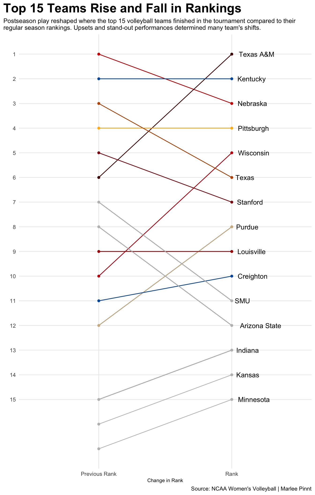

Code
library(tidyverse)
library(ggrepel)
library(gt)
rankings <- read_csv("Women's Volleyball Rankings.csv") |>
mutate(Rank = case_when(Rank == "T-22" ~ "22", TRUE ~ Rank)) |>
mutate(
Rank = as.numeric(Rank),
`Previous Rank` = as.numeric(`Previous Rank`)
)
rankingslong <- rankings |>
select(Team, Rank, `Previous Rank`) |>
pivot_longer(
cols=-Team,
names_to = "Period",
values_to = "Rank"
)
neb <- rankingslong |> filter(Team == "Nebraska")
tamu <- rankingslong |> filter(Team == "Texas A&M")
ken <- rankingslong |> filter(Team == "Kentucky")
pitt <- rankingslong |> filter(Team == "Pittsburgh")
wisc <- rankingslong |> filter(Team == "Wisconsin")
tex <- rankingslong |> filter(Team == "Texas")
stan <- rankingslong |> filter(Team == "Stanford")
pu <- rankingslong |> filter(Team == "Purdue")
louv <- rankingslong |> filter(Team == "Louisville")
creight <- rankingslong |> filter(Team == "Creighton")
smu <- rankingslong |> filter(Team == "SMU")
asu <- rankingslong |> filter(Team == "Arizona State")
indi <- rankingslong |> filter(Team == "Indiana")
ku <- rankingslong |> filter(Team == "Kansas")
minn <- rankingslong |> filter(Team == "Minnesota")
ggplot() +
geom_line(data=rankingslong |>
filter(Rank <= 15), aes(x=Period, y=Rank, group=Team)) +
geom_line(data=neb, aes(x=Period, y=Rank, group=Team), color="#d00000") +
geom_point(data=neb, aes(x=Period, y=Rank, group=Team), color="#d00000") +
geom_line(data=tamu, aes(x=Period, y=Rank, group=Team), color="#500000") +
geom_point(data=tamu, aes(x=Period, y=Rank, group=Team), color="#500000") +
geom_line(data=ken, aes(x=Period, y=Rank, group=Team), color="#005DAA") +
geom_point(data=ken, aes(x=Period, y=Rank, group=Team), color="#005DAA") +
geom_line(data=pitt, aes(x=Period, y=Rank, group=Team), color="#FFB81C") +
geom_point(data=pitt, aes(x=Period, y=Rank, group=Team), color="#FFB81C") +
geom_line(data=wisc, aes(x=Period, y=Rank, group=Team), color="#C5050C") +
geom_point(data=wisc, aes(x=Period, y=Rank, group=Team), color="#C5050C") +
geom_line(data=tex, aes(x=Period, y=Rank, group=Team), color="#bf5700") +
geom_point(data=tex, aes(x=Period, y=Rank, group=Team), color="#bf5700") +
geom_line(data=stan, aes(x=Period, y=Rank, group=Team), color="#8C1515") +
geom_point(data=stan, aes(x=Period, y=Rank, group=Team), color="#8C1515") +
geom_line(data=pu, aes(x=Period, y=Rank, group=Team), color="#CFB991") +
geom_point(data=pu, aes(x=Period, y=Rank, group=Team), color="#CFB991") +
geom_line(data=louv, aes(x=Period, y=Rank, group=Team), color="#AD0000") +
geom_point(data=louv, aes(x=Period, y=Rank, group=Team), color="#AD0000") +
geom_line(data=creight, aes(x=Period, y=Rank, group=Team), color="#005CA9") +
geom_point(data=creight, aes(x=Period, y=Rank, group=Team), color="#005CA9") +
geom_line(data=smu, aes(x=Period, y=Rank, group=Team), color="grey") +
geom_point(data=smu, aes(x=Period, y=Rank, group=Team), color="grey") +
geom_line(data=asu, aes(x=Period, y=Rank, group=Team), color="grey") +
geom_point(data=asu, aes(x=Period, y=Rank, group=Team), color="grey") +
geom_line(data=indi, aes(x=Period, y=Rank, group=Team), color="grey") +
geom_point(data=indi, aes(x=Period, y=Rank, group=Team), color="grey") +
geom_line(data=ku, aes(x=Period, y=Rank, group=Team), color="grey") +
geom_point(data=ku, aes(x=Period, y=Rank, group=Team), color="grey") +
geom_line(data=minn, aes(x=Period, y=Rank, group=Team), color="grey") +
geom_point(data=minn, aes(x=Period, y=Rank, group=Team), color="grey") +
geom_text(data=neb |> filter(Period == max(Period)), aes(x=Period, y=Rank, group=Team, label=Team), hjust = -0.2) +
geom_text(data=tamu |> filter(Period == max(Period)), aes(x=Period, y=Rank, group=Team, label=Team), hjust = -0.2) +
geom_text(data=ken |> filter(Period == max(Period)), aes(x=Period, y=Rank, group=Team, label=Team), hjust = -0.2) +
geom_text(data=pitt |> filter(Period == max(Period)), aes(x=Period, y=Rank, group=Team, label=Team), hjust = -0.2) +
geom_text(data=wisc |> filter(Period == max(Period)), aes(x=Period, y=Rank, group=Team, label=Team), hjust = -0.2) +
geom_text(data=tex |> filter(Period == max(Period)), aes(x=Period, y=Rank, group=Team, label=Team), hjust = -0.2) +
geom_text(data=stan |> filter(Period == max(Period)), aes(x=Period, y=Rank, group=Team, label=Team), hjust = -0.2) +
geom_text(data=pu |> filter(Period == max(Period)), aes(x=Period, y=Rank, group=Team, label=Team), hjust = -0.2) +
geom_text(data=louv |> filter(Period == max(Period)), aes(x=Period, y=Rank, group=Team, label=Team) , hjust = -0.2) +
geom_text(data=creight |> filter(Period == max(Period)), aes(x=Period, y=Rank, group=Team, label=Team), hjust = -0.2) +
geom_text(data=smu |> filter(Period == max(Period)), aes(x=Period, y=Rank, group=Team, label=Team), hjust = -0.2) +
geom_text(data=asu |> filter(Period == max(Period)), aes(x=Period, y=Rank, group=Team, label=Team), hjust = -0.2) +
geom_text(data=indi |> filter(Period == max(Period)), aes(x=Period, y=Rank, group=Team, label=Team), hjust = -0.2) +
geom_text(data=ku |> filter(Period == max(Period)), aes(x=Period, y=Rank, group=Team, label=Team), hjust = -0.2) +
geom_text(data=minn |> filter(Period == max(Period)), aes(x=Period, y=Rank, group=Team, label=Team), hjust = -0.2) +
scale_y_reverse(breaks=c(1,2,3,4,5,6,7,8,9,10,11,12,13,14,15)) +
labs(
x="Change in Rank",
y="",
title="Top 15 Teams Rise and Fall in Rankings",
subtitle="Postseason play reshaped where the top 15 volleyball teams finished in the tournament compared to their\nregular season rankings. Upsets and stand-out performances determined many team's shifts.",
caption="Source: NCAA Women's Volleyball | Marlee Pinnt"
) +
theme_minimal() +
theme(
plot.title = element_text(size = 20, face = "bold"),
axis.title = element_text(size = 8),
plot.subtitle = element_text(size=10),
panel.grid.minor = element_blank(),
plot.title.position = "plot"
) 